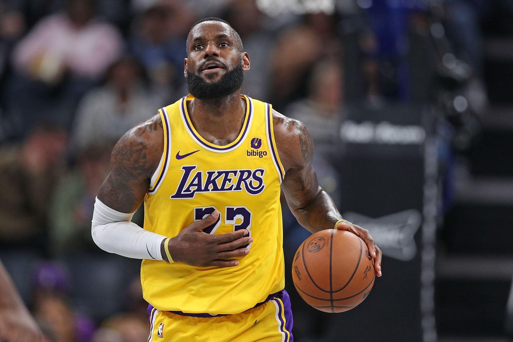
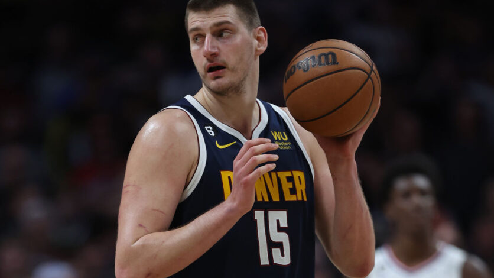

Weekend Update: Caitlin Clark on the WNBA Draft - SNL
Caitlin Clark, who is expected to be the No. 1 pick in Monday's WNBA draft, deftly skewered “Weekend Update” co-host Michael Che in a “Saturday Night Live” appearance and used the platform to offer a reminder of the many women's basketball stars who came before her. Clark came back on stage at the end of the show, bringing her former Hawkeye teammates Kate Martin, Gabbie Marshall and Jada Gyamfi with her. “It's so cool, they got into New York City yesterday,”
Clark said of her teammates. Just in case you're wondering, it's made by Nike and it's called the Women's Oversized Wool Destroyer Jacket.
Famous Basketball Players

LeBron James
American basketball power forward
LeBron Raymone James Sr. is an American professional basketball player for the Los Angeles Lakers of the National
Basketball Association. He has competed in 10 NBA Finals (with eight consecutive appearances from 2011 to 2018),
winning four NBA championships. He also won the inaugural NBA Cup in 2023 with the Lakers, and two Olympic gold medals as a member of the U.S. men's national team.
widely considered one of the greatest all-around basketball players of all time. James has won four National Basketball Association championships with three different teams, and he has been named NBA MVP four times.
Michael Jordan
American businessman and former basketball player
Michael Jeffrey Jordan, also known by his initials MJ,
is an American businessman and former professional basketball player. He played fifteen seasons in the National Basketball Association between 1984 and 2003, winning six NBA championships with the Chicago Bulls.
now? He became part-owner and head of basketball operations for the Charlotte Hornets (then named the Bobcats) in 2006 and bought a controlling interest in 2010, before selling his majority stake in 2023.
He is also the owner of 23XI Racing in the NASCAR Cup Series.
Air Jordan is a line of basketball shoes produced by Nike, Inc. Related apparel and accessories are marketed under the Jordan Brand. The silhouette of Michael Jordan served as inspiration to create the "Jumpman" logo.
Upcoming Basketball Games Today
>The NBA postseason is here. Let's take a closer look at the 20 teams that still have a chance to win the 2024 title -- including a trio of MVPs who will need to survive the play-in tournament to advance.
The American Broadcasting Company is an American commercial broadcast television network that serves as the flagship property of the Disney Entertainment division of the Walt Disney Company.
The NBA Finals will broadcast on ABC. ABC is available on many streaming services, including DIRECTV STREAM, Hulu + Live TV, fuboTV, and YouTube TV.
NEW TEAMS Coming to the NBA!
National Basketball Association has undergone several rounds of expansion in the league's history, since it began play in 1946, to reach 30 teams. The most recent examples are the additions of the Charlotte Hornets and Miami Heat in 1988; the Minnesota Timberwolves and Orlando Magic in 1989; the Toronto Raptors and Vancouver Grizzlies in 1995 (who relocated to Memphis in 2001); and the New Orleans Hornets in 2002. In June 2022, Commissioner Adam Silver confirmed that while there are no current plans to expand beyond 30 teams, the NBA "invariably will expand
Who Is The Tallest NBA Player Ever?

Gheorghe Mureșan
The tallest NBA player ever is Gheorghe Mureșan, standing at an imposing height of 7 feet 7 inches (231 cm). Born in Romania, Mureșan played in the NBA from 1993 to 2000, primarily with the Washington Bullets/Wizards and the New Jersey Nets.
This is a list of the tallest players in National Basketball Association history. It is currently topped by the 7-foot-7-inch (2.31 m) Romanian Gheorghe Mureșan, taken by the Washington Bullets as the number 30 overall pick in the 1993 NBA draft.
Mureșan and his wife Liliana and sons George and Victor have resided in Franklin Lakes, New Jersey, but they relocated to the suburbs of Washington, D.C. Since the 2016–2017 season, his oldest son, George, has played for the Georgetown University Hoyas as a walk-on forward.
.jpeg)